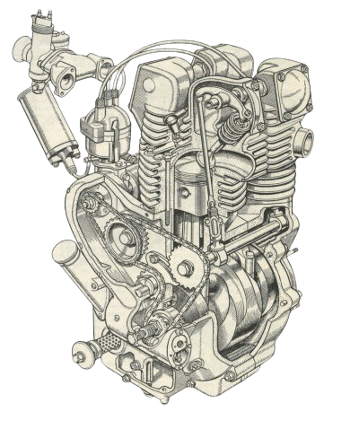
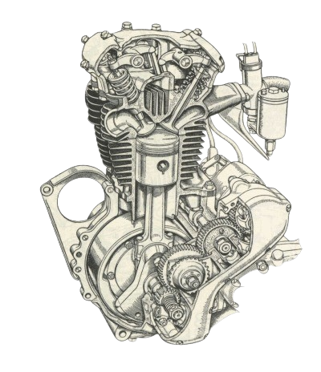

✧ Restoration : Where art meets Horsepower ✧
≼ CLASSIC MOTORCYCLE RESTORATION ≽
- Our restoration services are designed to bring back the vintage charm to your motorcycle. We specialize in restoring classic motorcycles to their former glory.
- In our purpose built workshop, we are able to offer either a complete restoration, or just a part restoration, on all type, make and age of motorcycle - no matter what condition they come to us in.
- All work is carried out with the greatest of care and attention to detail, by experts who have vast experience in the field. This includes mechanical work and exceptional quality paintwork. We also carry out welding work using processes to cover most materials.
- We do our best to ensure we replicate or carry out a repair with an outcome which is as close as possible to how the original manufacturer intended it to be.
- We use outside specialist companies for work such as machining to crankshafts, barrels and castings. All of these companies are tried and tested, reliable, and turn out first class work.
- Get in touch today to learn more about our classic motorcycle restoration services. Contact us!


≼ RESTORATION WORK INCLUDES ≽
- Full restoration including complete strip down & rebuilding of motorcycle
- Repairs or replacements of parts
- Frame construction/rebuilding
- Electric Start Conversions
- Engine rebuilding (if necessary)
- Brakes, suspension and wheels
- H.I.D Xenon Headlight Conversions
- Parts Refurbishing
- Designing and detailing
- Body work, including painting
- Powder Coating, Aqua Blasting
- Chroming, Polishing
- Inspection and pre-mot assessment